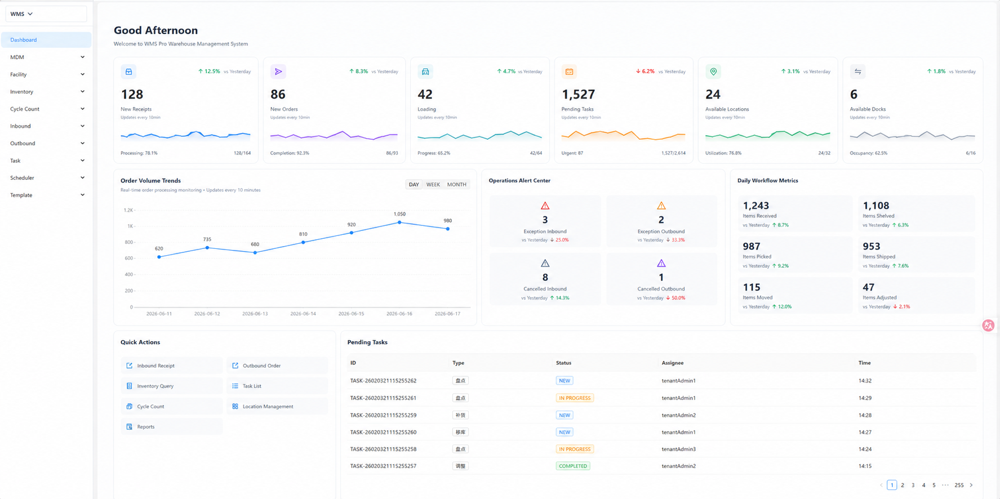
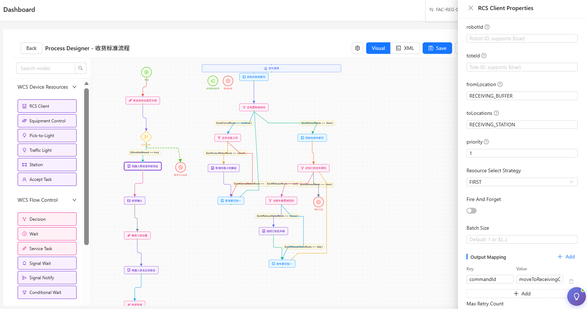
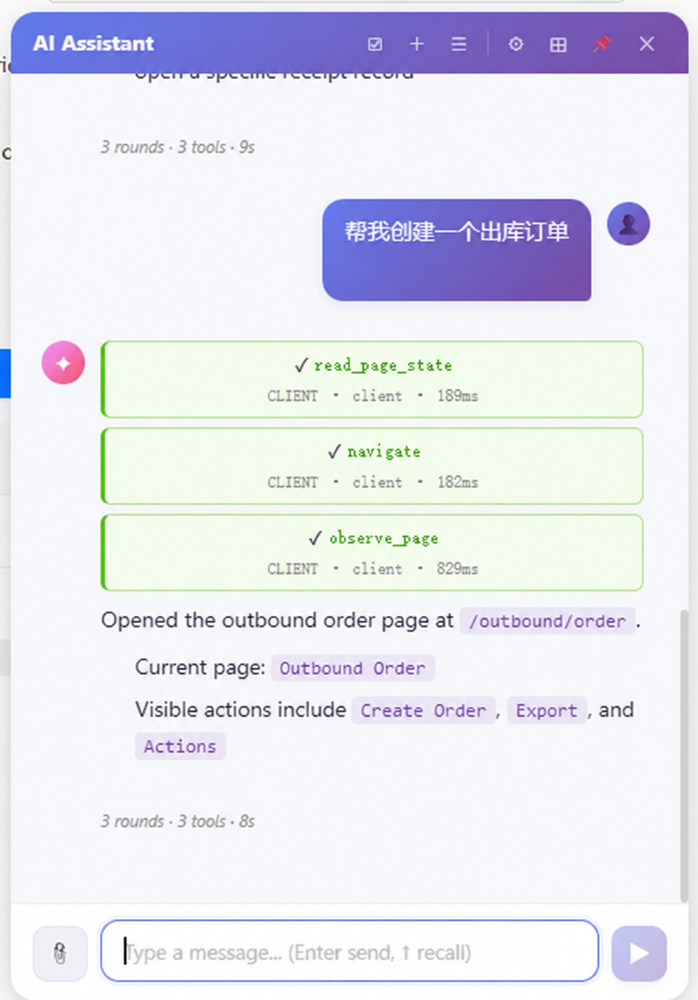

O
Operation
解决 WMS 层的现场业务、移动端 PDA 协同与人工操作，让收货、理货、盘点、拣选、复核都有可追踪的业务事实。
OrbiFlow.ai 面向正在自动化升级的中大型仓库（3PL / 电商 / 制造业），交付自研 WMS/WES/WCS、AI Agent 与机器人硬件的软硬一体方案。目标很直接：降低自动化项目定制开发成本、缩短新仓上线周期、避免被单一设备厂商绑定。

Dashboard 自动刷新
任务趋势与节拍监控
作业状态全追踪
What OrbiFlow Means
OrbiFlow 的名字不是抽象概念，而是产品边界：现场业务、机器人控制、数据智能不再分成三个孤岛，而是形成“モノ（物）、人、作业、情报”的统一流动。
解决 WMS 层的现场业务、移动端 PDA 协同与人工操作，让收货、理货、盘点、拣选、复核都有可追踪的业务事实。
解决 WCS/WES 层的机器人调度与自动化设备控制，覆盖 AGV/AMR、穿梭车、输送线、PTL、RFID、DWS 与 PLC。
解决全局数据看板、AI 预测、效率瓶颈分析，把订单、库存、设备、站点与异常转成可决策的运营情报。
将 O、R、BI 打破孤岛，串联成物流现场最顺畅的“モノ（物）、人、作业、情报”之流。
Buying Triggers
OrbiFlow 更适合业务复杂、设备复杂、现场异常多的仓库；如果只是单仓轻量进销存，传统 WMS 会更简单。
WMS、WCS、RCS、PTL、DWS 各有状态，异常靠人工微信群同步。
盲收、错分、堵线、复秤失败、格口满载会让标准流程频繁中断。
每个客户、渠道、承运商或设备变更都需要重新开发和发版。
订单、库存、容器、设备动作、人工确认和异常补偿不能串成一条链。
Business Outcomes
OrbiFlow 的价值不只在模块齐全，而是在业务规则、设备动作和异常补偿之间建立同一套事实链路。
通过 Job-Workflow、Filter 模板、Assignment Mode 和设备对象模型，把新场景从代码开发转为配置发布。
主数据、库位、容器、设备、工作站、任务状态机复用，减少每个仓从零建模的时间。
协议适配层统一封装 PLC、AMR、PTL、RFID、DWS 等设备，换设备优先改配置，不改业务逻辑。
盲收、错分、堵线、格口满、复秤失败与设备宕机进入补偿任务和 Rerouting，不靠人工记忆兜底。
Operational Proof Points
这些不是装饰数字，而是售前评估、方案设计和上线验收会逐项核对的能力口径。现场数据进入评估后，可进一步测算节拍、瓶颈、ROI 与上线分期。
完成业务流、库存流、设备流、异常流梳理，并输出上线范围与集成风险清单。
WCS 原生直连 PLC、输送线、PTL、RFID、DWS 与机器人控制系统。
7 种出库、3 种入库、9 种库内操作，覆盖 Pick & Pack、Pick To Wall、合托、拆托等。
REST API、Webhook、RabbitMQ/Kafka 消息队列、SFTP CSV 文件交换。
订单、任务、异常、工作流健康度与每小时完成量进入实时运营视图。
PTL 亮灯、输送线放行、扫码确认、分拣投递按毫秒级事件回传建模。
ILP / HLP / CLP / SLP 等容器类型，支持嵌套、整体移动和库存追溯。
租户、仓库、功能三层权限模型，多仓切换、数据隔离、主数据共享。
Core Product Features
OrbiFlow 以 WMS + WCS + Workflow + 设备直驱为主线组织功能。每个模块都是可配置、可追踪、可审计的业务对象，而不是分散的定制页面。
实时 KPI、订单趋势、异常预警、当日作业统计，支持 30s 自动刷新；管理层一屏判断吞吐、积压与异常优先级。
组织、客户、商品、行业属性、危化品、承运商、地址统一维护；减少多仓重复录入和口径不一致。
仓库、库位、工作站、设备、RCS 客户端、PTL、容器、虚拟位置组 VLG 结构化建模；扩仓不重写底层逻辑。
库存查询、锁定、调整、活动日志、动态属性映射、Min/Max 补货与 LP 追溯；降低超卖、错批和人工查账成本。
盘点计划、任务、结果、差异标记（DISCREPANCY / WARNING）；动盘不锁库，盘点不牺牲出入库节拍。
收货单、Dock 预约、卸货、LP 绑定、批次/序列号、标签打印、Blind Receiving 与策略上架；突发到货不断流。
订单接入、库存预分配、订单计划、智能派发、Pick-to-Tote、Pick-to-Belt、打包、装车与发运记录；减少人工拆单。
收货、上架、移动、拣货、打包、合托、组装、暂存、补货、装车、退库任务统一状态机；每个动作可追踪可重试。
零代码定义流程，拖拽节点、判断分支、并行执行、异常重试；新客户、新渠道、新设备场景配置即上线。
触发器、假期、执行日志、Cron 自动派发；订单释放、补货、波次和报表任务不依赖人工定时点击。
设备总览、拓扑布局、PLC 寄存器、AGV/AMR 车队、通信日志、仿真控制与回调记录；运维能定位到设备动作。
工作站操作、PDA 扫描优先（Scan-Priority）、大字体、防误触、弱网本地缓存；一线人员少看屏、多扫描。
System Screens
运营 Dashboard、Workflow 编排、AI Assistant、订单与库存页面贯穿同一套权限、主数据与任务状态机。管理端看策略，工作站看执行，PDA 看下一步动作。
订单趋势、任务进度、异常预警、当日作业统计，给仓库经理与供应链 VP 看同一套事实。

节点拖拽、设备选择、参数映射、异常分支与重试策略，支撑新场景配置即上线。

库存查询、订单追踪、出入库管理、数据报表、异常预警；LLM 解析意图，系统校验权限。
Software Control Matrix
Hardware Products
每个硬件产品都对应明确的现场用途、控制对象与 WCS 回传事件。OrbiFlow 将机器人、IoT 设备、传感器与手持终端抽象为统一设备对象，直接进入任务调度与异常处理链路。
悬挂式料箱到人系统，超高密度立体调度。WCS 管理轨道占用、吊箱动作、站点排队、异常绕行与 Rerouting。
动态格口分配，应对大促千万级包裹错层高速分拣。WES 按承运商、线路、截单时间与格口空闲率重组波次。
柔性台面分拣方案，WCS 实时下发小车行进轨迹、避让策略、投递动作与缺口重投策略。
支持 Modbus TCP/RTU、Profinet，秒级解析传感器、光电开关、急停状态与设备心跳，向 WCS 输出标准事件流。
智能亮灯拣选毫秒级响应；RFID 通道门与体积测量 DWS 支持流水线动态过账、重容差与单据强校验。
扫描优先（Scan-Priority）交互，扣动扳机即驱动业务流；HTML5 全屏沉浸式，支持收货看板、Settlement 确认屏、大字体、防误触与弱网缓存。
AI Agent Brain
Agent 持续读取订单截单时间、库存批次、设备负载、格口空闲率、路径拥塞、硬件宕机与人工站点产能，再把建议落到 WES/WCS 的任务与设备动作。
实时抓取截单时间、3D-Sort 格口空闲率、交通热力图、拣选站排队长度与承运商集包窗口，动态重组最优波次。
感知某段输送线、某台 AirRob、某个 PTL 格口或 DWS 复秤点不可用后，秒级重写任务路径，货物自动 Rerouting，业务不触发停机。
管理员可用普通话下达调度指令，例如“把华东 B2C 截单前 40 分钟订单优先推到 3D-Sort 二层格口，暂停低优先级补货”。
一句话描述入库上架流程，AI 确认搬运设备、工位操作、分配方式与超时策略，然后生成可执行的 Workflow Definition。
Deployment Scenarios
以下场景覆盖多货主仓、自动化分拣线与 AI 工作流配置，适合用于售前方案、项目评估和上线后运营复盘。
多货主库存隔离、跨仓主数据共享、承运商规则、电子面单直连与费用结算统一进入 WMS 事实层。
输送线、PTL、RFID、DWS 与边缘网关统一接入 WCS，按任务状态回传称重、体积、标签与过账结果。
通过 Workflow Definition 配置节点、设备、参数映射、异常分支与重试策略，新业务无需重新开发主流程。
Evaluation Output
第一次沟通不做泛泛演示，而是把仓库约束拆成业务流、库存流、设备流、异常流四张图，判断 OrbiFlow 是否能降低集成风险和上线不确定性。
入库、库存、出库、退货、盘点、补货、结算与异常补偿流程边界。
PLC、输送线、机器人、PTL、RFID、DWS、PDA 的动作、事件与协议风险。
按订单结构、截单时间、站点产能、格口资源与设备负载判断拥塞点。
从主数据、接口、设备联调、灰度切流到爬坡运营的实施顺序。
Turnkey Scope
OrbiFlow.ai 交付系统蓝图、主数据梳理、设备选型、WCS 驱动、现场节拍仿真、PDA 原型、PLC 联调到上线爬坡。客户不需要在软件商、集成商、机器人厂商与 IT 中间做翻译。
库位编码、容器体系、批次策略、单据流、承运商规则、SKU 尺寸与效期策略。
AirRob、3D-Sort、小黄人、PTL、RFID、DWS、边缘网关、PLC 与输送线。
盲收、理货、盘点、波次、补货、复核、称重、错分、宕机与补偿任务。
仿真压测、灰度切流、现场看板、SLA 追踪、故障演练与 SOP 固化。
建议附上订单结构、SKU 维度、峰值订单、当前系统、设备清单、截单规则和最痛的三个异常。我们会按业务流、控制流、设备流拆解是否适合 OrbiFlow。